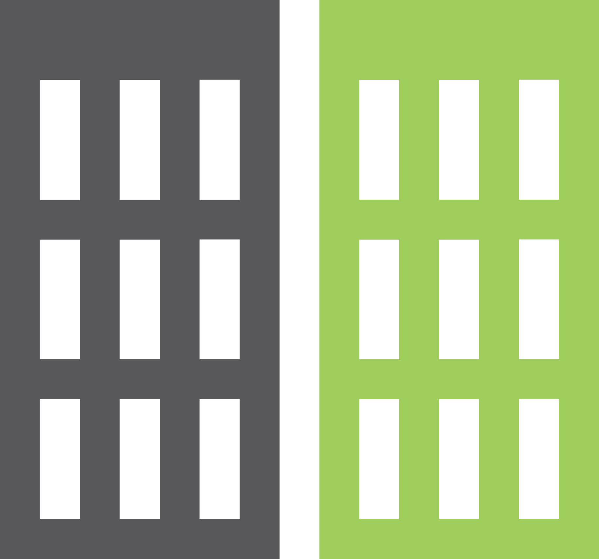
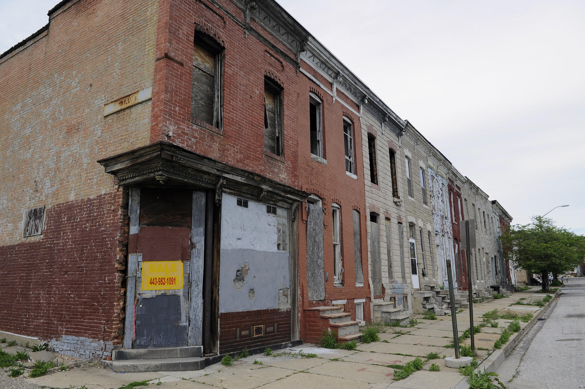

VACANT BUILDINGS IN BALTIMORE
A consistent issue in the Baltimore Community is the topic of vacant housing. Between the years of 1993 to 2017, 16,671 vacant buildings have been recorded in the Baltimore database. Most of the vacant buildings are located in areas of lower life expectancy. It is also difficult for the city to target the vacant buildings because 50% belongs to private developers outside of the state.

Map of Vacant Buildings in the Baltimore area
THE IMPACT OF VACANT BUILDINGS
Multiple consequences arise with the increase of vacant housing:
- There is an increase in assaultive violence (89% experienced aggravated assault, while 64% experienced gun assault)
- There is a higher chance of residents living near the vacant property to fall victims to fires
- The annual rate for the police to protect citizens from the threat of vacant buildings is $1472

ECONOMICAL AND SOCIAL SOLUTIONS
There are multiple options residents can pursue to improve their city:
- Volunteer and create social awareness with various Baltimore organizations (FLIP, HCHMD, BALTIMORE CITY, VOLUNTEER UNTAPPED)
- Communicate with your district leaders, expressing a need for an expedite solution
- Contribute to the City of Baltimore in the goal of buying back property from investors

If your are interested in knowing more about vacant buildings, click the links below: